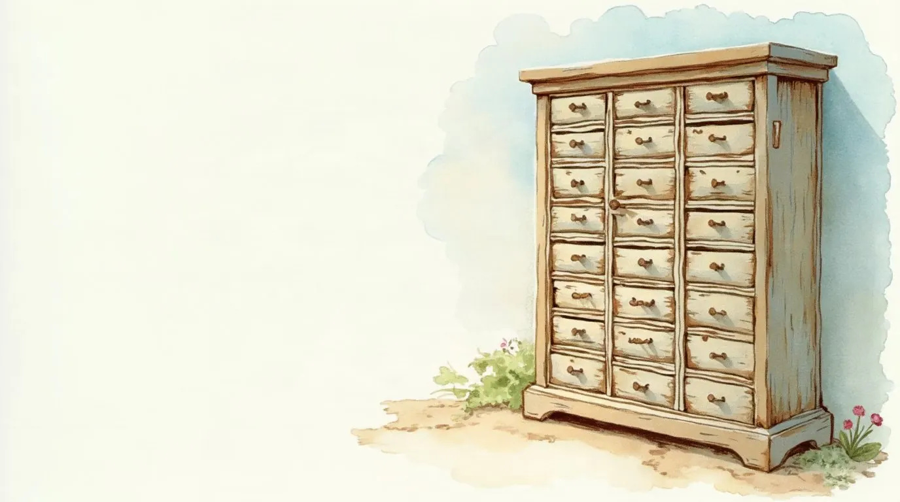

사상체질은 사람을 태양인, 태음인, 소양인, 소음인으로 나누어 몸의 경향을 살피는 한의학의 방법으로, 한 번의 설문으로 단정하지 않고 체형, 소화, 땀, 성향, 병력을 함께 보며 참고 자료로 활용합니다.
사상체질은 사람의 타고난 경향을 태양인, 태음인, 소양인, 소음인 네 가지로 나누어 보는 한의학의 방법으로, 체형과 소화, 땀, 성향, 병력을 종합해 참고 자료로 살핍니다. 이제마 선생의 『동의수세보원』에서 비롯된 개념이며, 과학적 근거는 제한적이라 진단을 대신하지 않습니다.
왜 체질을 함께 보나요
- 같은 음식, 같은 생활 습관에도 사람마다 몸의 반응이 다른 경우가 있어, 그 경향을 이해하는 실마리로 씁니다.
- 소화가 약한지, 땀이 많은지, 추위와 더위 중 무엇을 더 타는지 같은 특징을 정리하는 틀이 됩니다.
- 다만 체질은 고정된 꼬리표가 아니며, 지금의 증상과 상태가 언제나 더 중요합니다.

네 가지 유형
태양인, 태음인, 소양인, 소음인으로 나뉘며 각각 장부의 강약과 성향이 다르다고 봅니다. 이 유형이 사람을 정해 놓은 것은 아니며 같은 유형 안에서도 개인차가 큽니다.
어떻게 살피나요
한 가지 방법으로 단정하지 않고 아래를 종합합니다.
- 체형과 얼굴, 목소리
- 소화와 식욕, 변 상태
- 땀이 나는 정도, 추위와 더위를 타는 정도
- 성격과 감정 반응의 경향
- 병력과 가족력
- 잠의 모습과 대소변의 경향

알아 두면 좋은 점
- 인터넷 설문 한 번으로 체질을 정해 음식을 가리는 것은 권하지 않습니다.
- 알레르기나 질환이 있으면 체질보다 의학적 기준이 우선입니다.
- 성장 중인 아이는 변화가 많아 단정하지 않고 참고로만 봅니다.
- 체질을 이유로 복용 중인 약을 끊거나 바꾸지 않습니다.
진료실에서는 이렇게 진행됩니다
좋은꿈참사랑한의원에서는 먼저 지금 불편한 점과 생활을 충분히 듣고, 필요하다고 판단될 때 진맥·설진·복진과 함께 체질의 경향을 참고해 침이나 한약 상담 등 상태에 맞는 방법을 정합니다. 체질 이야기는 생활을 돌아보는 참고로 쓰며, 결과를 약속하는 근거로 쓰지 않습니다.

이렇게 기록해 오시면 상담이 쉬워집니다
- 평소 소화가 편한 음식과 불편한 음식
- 땀이 많은 때와 추위·더위를 타는 정도
- 지금까지의 병력, 가족력, 복용 중인 약
- 받은 건강검진 결과(있다면)
이런 증상은 먼저 확인이 필요합니다
- 체질에 맞춘다며 특정 음식을 끊어 체중이 줄거나 기운이 떨어진 경우
- 당뇨, 콩팥 질환 등으로 식이 조절이 필요한 경우(담당 의료진의 식이 지침이 우선)
- 체질식을 하다가 어지럼이나 기운 없음이 심해진 경우
복용 중인 약은 처방한 의사와 상의 없이 줄이거나 끊지 마세요.
자주 묻는 질문
체질에 맞는 음식이 따로 정해져 있나요?
체질만으로 음식을 정하기는 어렵습니다. 현재 건강 상태와 질환, 복용 중인 약이 우선이며 식사와 수면 같은 생활 전체를 함께 살핍니다.
아이의 체질도 볼 수 있나요?
성장 중에는 변화가 있어 단정하기보다 참고로 살핍니다.
체질을 알면 한약이 정해지나요?
아닙니다. 한약은 체질만이 아니라 지금의 증상과 진찰 결과를 함께 보고 상담 뒤에 정합니다.
체질은 평생 바뀌지 않나요?
사상의학에서는 타고난 경향으로 보지만, 실제 몸 상태는 나이와 생활에 따라 달라지므로 지금의 증상과 함께 살핍니다.
체질 설문을 해 보면 정확한가요?
설문은 참고 자료일 뿐이며, 체형과 소화, 땀, 병력 같은 여러 정보를 함께 봐야 합니다.
이 글은 일반적인 건강 정보이며 개인의 진단이나 치료를 대신하지 않습니다. 증상이 있거나 복용 중인 약이 있다면 진료를 통해 확인하세요. 치료 효과는 개인마다 다를 수 있습니다.
좋은꿈참사랑한의원은 재진 때 지난번 이야기부터 이어서 여쭙니다. 진료시간과 예약은 오시는 길에서 확인하세요.